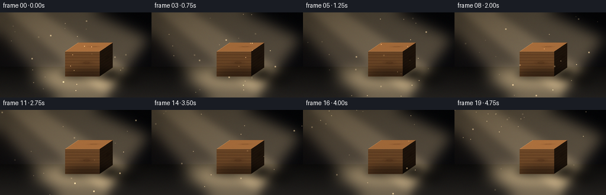
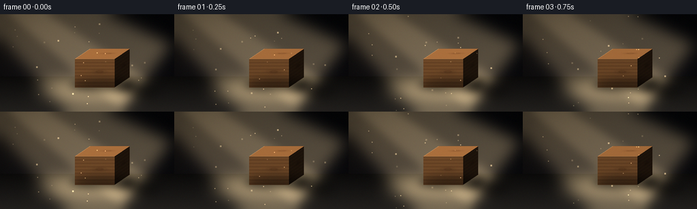

CODING AGENTS AS PIXEL WORLD MODELS
traex/Seed-2.1-Pro-0915 · phygen_041
点击播放 · 原生 RGB 像素
逐轮保存的候选
回放视频、检查图与代码变化。
每份候选均可单独播放。实际图片检查记录在下方工具轨迹中。
候选 01播放与检查图
点击播放 · 原生 RGB 像素


展开代码变化
--- 上一保存版本
+++ 本次保存版本
@@ -0,0 +1,355 @@
+"""Procedural RGB video: a diagonal light beam on a wooden block in the dark.
+
+Renders 20 frames at 256x144 (4 fps) with numpy + PIL only. The scene is
+drawn at 2x supersampling and downsampled for smooth edges. No external
+assets, models, or rendering engines are used.
+"""
+
+from pathlib import Path
+import math
+
+import numpy as np
+from PIL import Image, ImageDraw, ImageFilter
+
+import artifact_io
+
+SEED = 21
+W, H, N, FPS = 256, 144, 20, 4.0
+S = 2 # supersampling factor
+W2, H2 = W * S, H * S
+rng = np.random.default_rng(SEED)
+
+
+# --------------------------------------------------------------------------
+# Value noise for wood grain and beam shimmer
+# --------------------------------------------------------------------------
+def smooth_noise_grid(size, r):
+ grid = r.random((size, size)).astype(np.float32)
+ img = Image.fromarray((grid * 255).astype(np.uint8))
+ img = img.filter(ImageFilter.GaussianBlur(size / 6.0))
+ return np.asarray(img, dtype=np.float32) / 255.0
+
+
+NOISE = smooth_noise_grid(96, np.random.default_rng(SEED + 1))
+NOISE2 = smooth_noise_grid(64, np.random.default_rng(SEED + 2))
+
+
+def sample_noise(tex, x, y):
+ """Bilinear sampling with wrap-around."""
+ h, w = tex.shape
+ x = np.mod(x, w)
+ y = np.mod(y, h)
+ x0, y0 = np.floor(x).astype(np.int32), np.floor(y).astype(np.int32)
+ x1, y1 = (x0 + 1) % w, (y0 + 1) % h
+ fx, fy = (x - x0), (y - y0)
+ v00 = tex[y0, x0]
+ v10 = tex[y0, x1]
+ v01 = tex[y1, x0]
+ v11 = tex[y1, x1]
+ return (v00 * (1 - fx) * (1 - fy) + v10 * fx * (1 - fy)
+ + v01 * (1 - fx) * fy + v11 * fx * fy)
+
+
+# --------------------------------------------------------------------------
+# Procedural wood
+# --------------------------------------------------------------------------
+WOOD_BASE = np.array([168, 112, 62], dtype=np.float32)
+WOOD_DARK = np.array([104, 62, 32], dtype=np.float32)
+
+
+def wood_color(u, v, knot_u=0.62, knot_v=0.55):
+ u = np.asarray(u, dtype=np.float32)
+ v = np.asarray(v, dtype=np.float32)
+ n = sample_noise(NOISE, u * 5.0 + 11.3, v * 9.0 + 4.7)
+ n2 = sample_noise(NOISE2, u * 14.0, v * 22.0)
+ # Long wavy grain lines running along u.
+ wave = np.sin((v * 17.0 + n * 5.5) * math.pi)
+ fine = np.sin((v * 46.0 + n2 * 7.0) * math.pi)
+ grain = 0.5 + 0.5 * wave
+ shade = 0.72 + 0.28 * grain + 0.06 * fine
+ # One elongated knot.
+ du, dv = (u - knot_u) * 2.2, (v - knot_v) * 5.0
+ d = np.sqrt(du * du + dv * dv)
+ knot = np.exp(-d * d * 9.0)
+ ring = 0.5 + 0.5 * np.sin(d * 26.0)
+ shade *= 1.0 - knot * (0.55 - 0.25 * ring)
+ t = np.clip(1.15 - shade, 0.0, 1.0)[..., None]
+ color = WOOD_BASE * (1.0 - t) + WOOD_DARK * t
+ return np.clip(color, 0, 255)
+
+
+# --------------------------------------------------------------------------
+# Static backdrop and floor
+# --------------------------------------------------------------------------
+def build_background():
+ yy = np.linspace(0, 1, H2, dtype=np.float32)[:, None]
+ xx = np.linspace(0, 1, W2, dtype=np.float32)[None, :]
+ top = np.array([7, 8, 11], dtype=np.float32)
+ bottom = np.array([16, 15, 18], dtype=np.float32)
+ bg = top[None, None] * (1 - yy[..., None]) + bottom[None, None] * yy[..., None]
+ bg = np.broadcast_to(bg, (H2, W2, 3)).copy()
+ # Faint warm haze toward the upper-left where the beam enters.
+ haze = np.exp(-(((xx - 0.05) ** 2) / 0.18 + ((yy - 0.02) ** 2) / 0.25))
+ bg += haze[..., None] * np.array([26, 20, 12], dtype=np.float32)
+ # Vignette.
+ r2 = (xx - 0.5) ** 2 + (yy - 0.55) ** 2
+ bg *= (1.0 - 0.55 * np.clip(r2 / 0.42, 0, 1))[..., None]
+ return np.clip(bg, 0, 255)
+
+
+HORIZON = 92 * S
+
+
+def add_floor(img):
+ floor = np.zeros_like(img)
+ fy = (np.arange(H2, dtype=np.float32) - HORIZON) / (H2 - HORIZON)
+ fy = np.clip(fy, 0, 1)
+ shade = 10 + 22 * fy
+ floor[:, :, 0] = shade[:, None] * 1.05
+ floor[:, :, 1] = shade[:, None] * 0.98
+ floor[:, :, 2] = shade[:, None] * 0.9
+ mask = (np.arange(H2) >= HORIZON)[:, None]
+ img[:] = np.where(mask[..., None], floor, img)
+ # Faint floorboard seams in perspective.
+ overlay = Image.new("L", (W2, H2), 0)
+ od = ImageDraw.Draw(overlay)
+ for k in range(-4, 9):
+ x_bottom = k * 78 * S + 40
+ x_horizon = 128 * S + (x_bottom - 128 * S) * 0.25
+ od.line([(x_horizon, HORIZON), (x_bottom, H2)], fill=18, width=1)
+ arr = np.asarray(overlay, dtype=np.float32) / 255.0
+ img -= arr[..., None] * np.array([6, 5, 5], dtype=np.float32)
+ np.clip(img, 0, 255, out=img)
+
+
+# --------------------------------------------------------------------------
+# Polygon / face helpers
+# --------------------------------------------------------------------------
+def poly_mask(points, blur=0):
+ m = Image.new("L", (W2, H2), 0)
+ ImageDraw.Draw(m).polygon([(int(x), int(y)) for x, y in points], fill=255)
+ if blur:
+ m = m.filter(ImageFilter.GaussianBlur(blur))
+ return np.asarray(m, dtype=np.float32) / 255.0
+
+
+def add_layer(img, mask, color, mode="add"):
+ m = mask[..., None]
+ if mode == "add":
+ img += m * np.asarray(color, dtype=np.float32)
+ elif mode == "mul":
+ img *= 1.0 - m
+ np.clip(img, 0, 255, out=img)
+
+
+def draw_face(img, points, origin, e_u, e_v, shade, flicker, tint=1.0):
+ """Rasterize a parallelogram face with per-pixel wood UVs."""
+ mask = poly_mask(points)
+ ys, xs = np.nonzero(mask > 0.0)
+ if len(xs) == 0:
+ return
+ ox, oy = origin
+ (ux, uy), (vx, vy) = e_u, e_v
+ det = ux * vy - uy * vx
+ px, py = xs - ox, ys - oy
+ u = (vy * px - vx * py) / det
+ v = (-uy * px + ux * py) / det
+ color = wood_color(u, v) * tint
+ lit = shade[0] + shade[1] * flicker
+ color *= lit
+ sel = mask[ys, xs]
+ img[ys, xs] = img[ys, xs] * (1 - sel[..., None]) + np.clip(color, 0, 255) * sel[..., None]
+
+
+# Cube geometry (supersampled coords). Light comes from the upper left.
+FBL = (110 * S, 108 * S)
+FBR = (168 * S, 108 * S)
+FTR = (168 * S, 66 * S)
+FTL = (110 * S, 66 * S)
+DEPTH = (22 * S, -15 * S)
+BBL = tuple(a + b for a, b in zip(FBL, DEPTH))
+BBR = tuple(a + b for a, b in zip(FBR, DEPTH))
+BTR = tuple(a + b for a, b in zip(FTR, DEPTH))
+BTL = tuple(a + b for a, b in zip(FTL, DEPTH))
+
+# (ambient, diffuse) per face; right face turns away from the upper-left light.
+FACE_FRONT = (0.16, 0.52)
+FACE_TOP = (0.20, 0.85)
+FACE_RIGHT = (0.10, 0.10)
+
+
+def draw_block(img, flicker):
+ # Right side (dark, facing away from the light).
+ draw_face(img, [FBR, BBR, BTR, FTR], FBR, DEPTH, (0, FTR[1] - FBR[1]),
+ FACE_RIGHT, flicker, tint=0.92)
+ # Top (brightest).
+ draw_face(img, [FTL, FTR, BTR, BTL], FTL, (FTR[0] - FTL[0], 0), DEPTH,
+ FACE_TOP, flicker, tint=1.05)
+ # Front.
+ draw_face(img, [FBL, FBR, FTR, FTL], FBL, (FBR[0] - FBL[0], 0), (0, FTL[1] - FBL[1]),
+ FACE_FRONT, flicker, tint=1.0)
+ # Crisp edge accents where the light grazes the top-left edges.
+ edge = Image.new("L", (W2, H2), 0)
+ ed = ImageDraw.Draw(edge)
+ ed.line([FTL, FTR], fill=int(70 * flicker), width=max(1, S // 2))
+ ed.line([FTL, BTL], fill=int(55 * flicker), width=max(1, S // 2))
+ e = np.asarray(edge, dtype=np.float32) / 255.0
+ img += e[..., None] * np.array([255, 214, 150], dtype=np.float32)
+ np.clip(img, 0, 255, out=img)
+
+
+# --------------------------------------------------------------------------
+# Beam, light pool, shadow and dust
+# --------------------------------------------------------------------------
+BEAM_WARM = np.array([255, 222, 165], dtype=np.float32)
+
+
+def beam_layer(strength, scroll):
+ """Volumetric cone entering upper-left and landing around the block."""
+ src = (-55 * S, -70 * S)
+ far_center = (196 * S, 118 * S)
+ near_half = 26 * S
+ far_half = 92 * S
+ dx, dy = far_center[0] - src[0], far_center[1] - src[1]
+ length = math.hypot(dx, dy)
+ nx, ny = -dy / length, dx / length # perpendicular
+ quad = [
+ (src[0] + nx * near_half, src[1] + ny * near_half),
+ (src[0] - nx * near_half, src[1] - ny * near_half),
+ (far_center[0] - nx * far_half, far_center[1] - ny * far_half),
+ (far_center[0] + nx * far_half, far_center[1] + ny * far_half),
+ ]
+ mask = poly_mask(quad, blur=10 * S)
+ # Length gradient: glow builds toward the lit floor.
+ t = ((np.arange(W2)[None, :] - src[0]) * dx + (np.arange(H2)[:, None] - src[1]) * dy) / (length * length)
+ t = np.clip(t, 0, 1)
+ grad = 0.45 + 0.55 * t
+ # Scrolling shimmer inside the beam.
+ shimmer = sample_noise(NOISE2,
+ np.arange(W2)[None, :] * 0.05 + scroll,
+ np.arange(H2)[:, None] * 0.05 + scroll * 0.4)
+ mask *= grad * (0.82 + 0.36 * shimmer)
+ layer = mask[..., None] * BEAM_WARM * (0.30 * strength)
+ # Bright narrow core.
+ core_quad = [
+ (src[0] + nx * near_half * 0.35, src[1] + ny * near_half * 0.35),
+ (src[0] - nx * near_half * 0.35, src[1] - ny * near_half * 0.35),
+ (far_center[0] - nx * far_half * 0.32, far_center[1] - ny * far_half * 0.32),
+ (far_center[0] + nx * far_half * 0.32, far_center[1] + ny * far_half * 0.32),
+ ]
+ core = poly_mask(core_quad, blur=6 * S) * grad * (0.75 + 0.5 * shimmer)
+ layer += core[..., None] * BEAM_WARM * (0.16 * strength)
+ return layer
+
+
+def light_pool(strength):
+ m = Image.new("L", (W2, H2), 0)
+ d = ImageDraw.Draw(m)
+ cx, cy = 132 * S, 112 * S
+ d.ellipse([cx - 78 * S, cy - 15 * S, cx + 78 * S, cy + 15 * S], fill=255)
+ m = m.filter(ImageFilter.GaussianBlur(12 * S))
+ arr = np.asarray(m, dtype=np.float32) / 255.0
+ return arr[..., None] * BEAM_WARM * (0.34 * strength)
+
+
+def cast_shadow():
+ """Soft elongated shadow pushed to the lower right, along the floor."""
+ extend = (48 * S, 20 * S)
+ quad = [
+ FBR, BBR,
+ (BBR[0] + extend[0], BBR[1] + extend[1]),
+ (FBR[0] + extend[0] * 0.9, FBR[1] + extend[1]),
+ ]
+ m = poly_mask(quad, blur=7 * S)
+ # Fade with distance from the block.
+ src = np.array([(FBR[0] + BBR[0]) / 2, (FBR[1] + BBR[1]) / 2])
+ yy, xx = np.mgrid[0:H2, 0:W2]
+ d = np.sqrt((xx - src[0]) ** 2 + (yy - src[1]) ** 2)
+ fade = np.clip(1.0 - d / (62 * S), 0, 1)
+ return m * (0.35 + 0.4 * fade)
+
+
+def contact_shadow():
+ m = Image.new("L", (W2, H2), 0)
+ d = ImageDraw.Draw(m)
+ cx = (FBL[0] + BBR[0]) / 2
+ cy = (FBL[1] + BBR[1]) / 2 + 4 * S
+ d.ellipse([cx - 48 * S, cy - 9 * S, cx + 48 * S, cy + 9 * S], fill=255)
+ m = m.filter(ImageFilter.GaussianBlur(6 * S))
+ return np.asarray(m, dtype=np.float32) / 255.0 * 0.55
+
+
+DUST = []
+for _ in range(46):
+ DUST.append({
+ "t": rng.uniform(0, 1), # position along beam
+ "off": rng.uniform(-1, 1), # lateral offset
+ "speed": rng.uniform(0.015, 0.05),
+ "phase": rng.uniform(0, math.tau),
+ "size": rng.choice([1, 1, 2]),
+ })
+
+
+def draw_dust(img, frame, strength):
+ src = np.array([-55 * S, -70 * S], dtype=np.float32)
+ far = np.array([196 * S, 118 * S], dtype=np.float32)
+ direction = far - src
+ length = np.linalg.norm(direction)
+ perp = np.array([-direction[1], direction[0]]) / length
+ layer = np.zeros_like(img)
+ for p in DUST:
+ t = (p["t"] + frame * p["speed"]) % 1.0
+ wander = p["off"] + 0.12 * math.sin(frame * 0.9 + p["phase"])
+ pos = src + direction * t + perp * wander * (26 * S + 90 * S * t)
+ x, y = int(pos[0]), int(pos[1])
+ if not (0 <= x < W2 and 0 <= y < H2):
+ continue
+ twinkle = 0.5 + 0.5 * math.sin(frame * 1.7 + p["phase"])
+ alpha = (0.25 + 0.75 * twinkle) * strength * (0.4 + 0.6 * t)
+ r = p["size"]
+ layer[max(0, y - r):y + r + 1, max(0, x - r):x + r + 1] += (
+ BEAM_WARM * 0.5 * alpha)
+ img += np.clip(layer, 0, 255)
+ np.clip(img, 0, 255, out=img)
+
+
+# --------------------------------------------------------------------------
+# Frame assembly
+# --------------------------------------------------------------------------
+def render_frame(frame):
+ t = frame / FPS
+ # Gentle, deterministic flame-like flicker.
+ flicker = (1.0
+ + 0.045 * math.sin(t * math.tau * 0.7)
+ + 0.028 * math.sin(t * math.tau * 1.9 + 1.3)
+ + 0.018 * math.sin(t * math.tau * 3.3 + 0.4))
+ strength = np.clip(flicker, 0.85, 1.12)
+
+ img = build_background()
+ add_floor(img)
+ img += light_pool(strength)
+ np.clip(img, 0, 255, out=img)
+ img += beam_layer(strength, scroll=frame * 0.9)
+ np.clip(img, 0, 255, out=img)
+ add_layer(img, cast_shadow(), 0, mode="mul")
+ draw_block(img, flicker)
+ add_layer(img, contact_shadow(), 0, mode="mul")
+ draw_dust(img, frame, strength)
+
+ # Subtle film grain.
+ grain = rng.normal(0, 1.6, img.shape).astype(np.float32)
+ img = np.clip(img + grain, 0, 255)
+
+ out = Image.fromarray(img.astype(np.uint8)).resize((W, H), Image.Resampling.LANCZOS)
+ return np.asarray(out, dtype=np.uint8)
+
+
+def main():
+ frames = np.stack([render_frame(i) for i in range(N)], axis=0)
+ case_dir = Path(__file__).parent
+ artifact_io.save(frames, case_dir)
+ print(f"Saved {frames.shape[0]} frames at {W}x{H}, {FPS} fps -> {case_dir}")
+
+
+if __name__ == "__main__":
+ main()
候选 02播放与检查图
点击播放 · 原生 RGB 像素

展开代码变化
--- 上一保存版本
+++ 本次保存版本
@@ -89,8 +89,8 @@
bg = top[None, None] * (1 - yy[..., None]) + bottom[None, None] * yy[..., None]
bg = np.broadcast_to(bg, (H2, W2, 3)).copy()
# Faint warm haze toward the upper-left where the beam enters.
- haze = np.exp(-(((xx - 0.05) ** 2) / 0.18 + ((yy - 0.02) ** 2) / 0.25))
- bg += haze[..., None] * np.array([26, 20, 12], dtype=np.float32)
+ haze = np.exp(-(((xx - 0.02) ** 2) / 0.08 + ((yy + 0.05) ** 2) / 0.12))
+ bg += haze[..., None] * np.array([13, 10, 6], dtype=np.float32)
# Vignette.
r2 = (xx - 0.5) ** 2 + (yy - 0.55) ** 2
bg *= (1.0 - 0.55 * np.clip(r2 / 0.42, 0, 1))[..., None]
@@ -266,7 +266,7 @@
yy, xx = np.mgrid[0:H2, 0:W2]
d = np.sqrt((xx - src[0]) ** 2 + (yy - src[1]) ** 2)
fade = np.clip(1.0 - d / (62 * S), 0, 1)
- return m * (0.35 + 0.4 * fade)
+ return m * (0.42 + 0.42 * fade)
def contact_shadow():
候选 03播放与检查图
可观测工具轨迹
实际执行的命令与返回图片。
命令 1exit 0
/bin/bash -lc 'ls -la; cat prompt.txt; echo ---; cat GENERATION_RULES.md; echo ---; cat task_spec.json'
命令 2exit 0
/bin/bash -lc 'cat artifact_io.py; echo ---; sed -n 1,60p player_template.html'
命令 3exit 1
/bin/bash -lc 'cd . && python generate.py && ls -la'
命令 4exit 0
/bin/bash -lc 'cd . && python generate.py && ls -la'
命令 5exit 0
/bin/bash -lc "cd . && python - <<'EOF'
import numpy as np
from PIL import Image
frames = np.stack([np.asarray(Image.open(f\"frames/{i:02d}.png\")) for i in range(20)])
print(\"shape\", frames.shape, frames.dtype)
f0, f19 = frames[0].astype(float), frames[19].astype(float)
lum = lambda a: a.mean(axis=2)
# overall brightness, and region checks
L = lum(f0)
print(\"mean lum f0/f19:\", L.mean().round(2), lum(f19).mean().round(2))
# block bbox area x 110..168, y 66..108 -> brightest?
block = L[66:108, 110:168].mean()
bg = L[:60, :].mean()
print(\"block mean vs upper bg:\", block.round(2), bg.round(2))
# shadow region to lower-right of block base
sh = L[112:132, 170:210].mean()
pool = L[100:124, 90:150].mean()
print(\"shadow area vs lit floor pool:\", sh.round(2), pool.round(2))
# beam diagonal: upper-left brighter than upper-right
print(\"UL vs UR:\", L[:40, :60].mean().round(2), L[:40, 196:].mean().round(2))
# ascii thumbnail of frame 10
a = lum(frames[10])
small = Image.fromarray(frames[10]).resize((64, 36))
sa = np.asarray(small).mean(axis=2)
chars = \" .:-=+*#%@\"
for row in sa:
print(\"\".join(chars[min(9, int(v/26))] for v in row))
# motion: mean abs diff between consecutive frames
d = [np.abs(frames[i].astype(int)-frames[i-1].astype(int)).mean() for i in range(1,20)]
print(\"frame deltas:\", np.round(d,3))
EOF"命令 6exit 1
/bin/bash -lc "cd . && python - <<'EOF'
import numpy as np
from PIL import Image
frames = np.stack([np.asarray(Image.open(f\"frames/{i:02d}.png\")) for i in range(20)]).astype(float)
f = frames[10].mean(axis=2)
# front face interior, top face interior, right face interior
print(\"front:\", f[80:100, 120:160].mean().round(1))
print(\"top :\", f[70:80, 125:160].mean().round(1))
print(\"right:\", f[85:102, 172:186].mean().round(1))
# shadow vs adjacent floor outside pool/shadow
print(\"shadow:\", f[114:124, 178:200].mean().round(1))
print(\"floor right of shadow:\", f[114:124, 225:245].mean().round(1))
print(\"floor left lit:\", f[114:124, 70:95].mean().round(1))
# dark corners (room is dark)
print(\"corners:\", f[2:8,2:8].mean().round(1), f[2:8,248:254].mean().round(1), f[136:142,2:8].mean().round(1))
# warm tint check in beam vs neutral
b = frames[10]
beam_px = b[30:45, 40:80].reshape(-1,3).mean(0)
dark_px = b[120:135, 230:245].reshape(-1,3).mean(0)
print(\"beam rgb:\", beam_px.round(1), \"dark rgb:\", dark_px.round(1))
# flicker envelope
means = frames.mean(axis=(1,2,3))
print(\"frame means min/max:\", means.min().round(2), means.max().round(2))
# npz roundtrip matches frames
z = np.load(\"pixels.npz\")[\"pixels\"]
t = np.stack([((z[...,i]>>16)&255), ((z[...,i]>>8)&255), (z[...,i]&255)], axis=-1)
print(\"npz matches frames:\", np.array_equal(t.astype(np.uint8), frames.astype(np.uint8)))
EOF"命令 7exit 0
/bin/bash -lc 'cd . && mkdir -p .tmp/candidate_v1 && cp pixels.npz inspection.png index.html .tmp/candidate_v1/ && cp -r frames .tmp/candidate_v1/'
命令 8exit 1
/bin/bash -lc "cd . && python generate.py && python - <<'EOF'
import numpy as np
from PIL import Image
frames = np.stack([np.asarray(Image.open(f\"frames/{i:02d}.png\")) for i in range(20)]).astype(float)
f = frames[10].mean(axis=2)
print(\"UL corner:\", f[2:8,2:8].mean().round(1), \" UR:\", f[2:8,248:254].mean().round(1), \" BL:\", f[136:142,2:8].mean().round(1))
print(\"front/top/right:\", f[80:100,120:160].mean().round(1), f[70:80,125:160].mean().round(1), f[85:102,172:186].mean().round(1))
print(\"shadow vs dark floor vs lit floor:\", f[114:124,178:200].mean().round(1), f[114:124,225:245].mean().round(1), f[114:124,70:95].mean().round(1))
print(\"global mean range:\", frames.mean(axis=(1,2,3)).min().round(2), frames.mean(axis=(1,2,3)).max().round(2))
z = np.load(\"pixels.npz\")[\"pixels\"]
rec = np.stack([((z[...,i]>>16)&255),((z[...,i]>>8)&255),(z[...,i]&255)],axis=-1).astype(np.uint8)
print(\"npz ok:\", np.array_equal(rec, frames.astype(np.uint8)))
EOF"命令 9exit 0
/bin/bash -lc "cd . && python - <<'EOF'
import numpy as np
from PIL import Image
frames = np.stack([np.asarray(Image.open(f\"frames/{k:02d}.png\")) for k in range(20)]).astype(np.uint8)
z = np.load(\"pixels.npz\")[\"pixels\"] # H,W,N packed
p = np.transpose(z, (2,0,1))
rec = np.stack([(p>>16)&255, (p>>8)&255, p&255], axis=-1).astype(np.uint8)
print(\"npz roundtrip matches frames:\", np.array_equal(rec, frames))
print(\"shape:\", z.shape)
EOF
ls .tmp/candidate_v1"保存候选 3 份；完成命令 9 次；可验证图片返回 0 张。原始 API 响应与完整日志保留在本地。